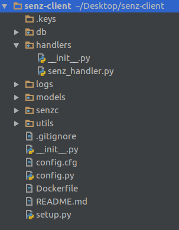
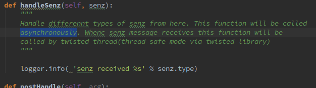
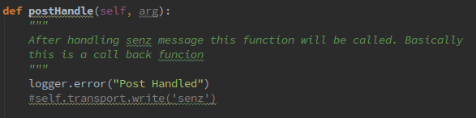

Now senz service is available on Python also. Developers could use this to integrate it into their apps or simply build apps on it
You should read this if you are going to build your app on the python client platform.

In the python client Code (senz-client) , all you need is to take in to granted the senzHandler class. Where receiving senz massages are read here and the appropriate actions are handled. So what you have to do is you will have to write your code here to combine your app to this senz. Sometimes if you are using a different type of language and still you can write code here and connect your app accordingly.
If You observe the Directory structure of the source code you will find it like this
Once you have downloaded the application, the first thing you have to do is thatssave it in to a desired directory. Then open the command line or a text editor like gedit and edit the following file.
Config.cfg located in the project directory itself. There you will have to enter the switch details
#udp mysensors info
[connections]
host=localhost
port=9090
state=INITIAL
senzy=test
server=mysensors
[client]
name=phonesenZ
[server]
port=9090
host=server_ip_here
name=mysensorsFirst you will have to enter the client name which is important to create keys used in communication in the [Client] section
[client]
name=name_of_your_clientSo here You will have to define the servers ip address in the [server] section
[server]
port=9090
host=ip_of_the_server>You are about to run the client now.
To run the client You have to be in the projects directory. For example you will have to be in the senz-client directory.
$ cd Desktop/senz-client
Then in the command line you will have to run
$ python senzc/client.py
Now your client is up and running.
Running just the client doesn't make you anything. So you have to use it in your app. For that you have do some simple things. As we discussed earlier the directory structure of source is as below.There in the handlers directory you will find the codes that needs to be edited in order to plug the client in to your application.
In the senz-handler file you will find the senzHandler class. This the place where you would have to code what happens when a senz is received. Here you can set how the incoming data to be handled, how the reply is to be sent and so on. In case if you want to handle your reply massages you can define them also in another separate file in a directory also.
Then you will also have to define what happens after massage is done or after handling the senze. This is wheter you need to close the connection , print something on commandline or a call back , log etc.
If you were successful doing these You are now up with a working client.